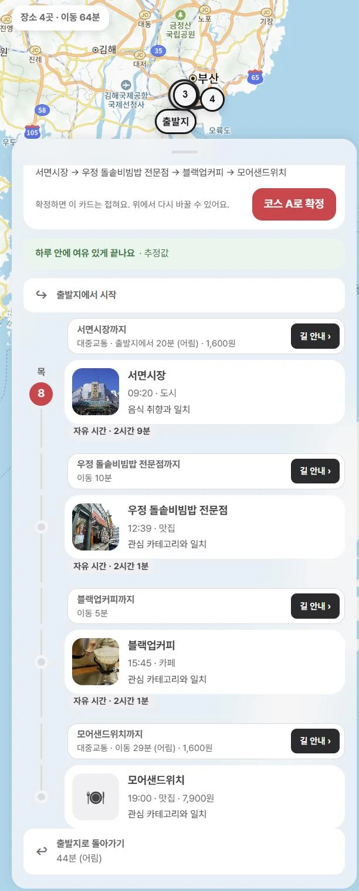
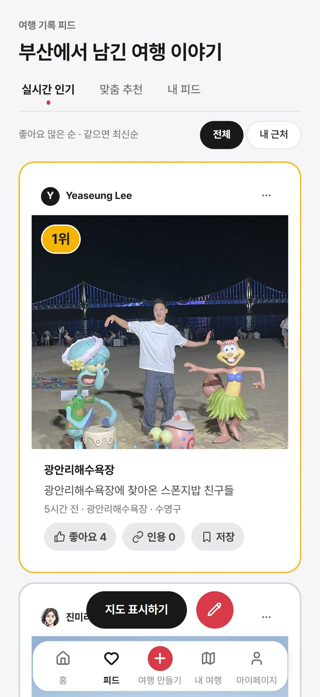
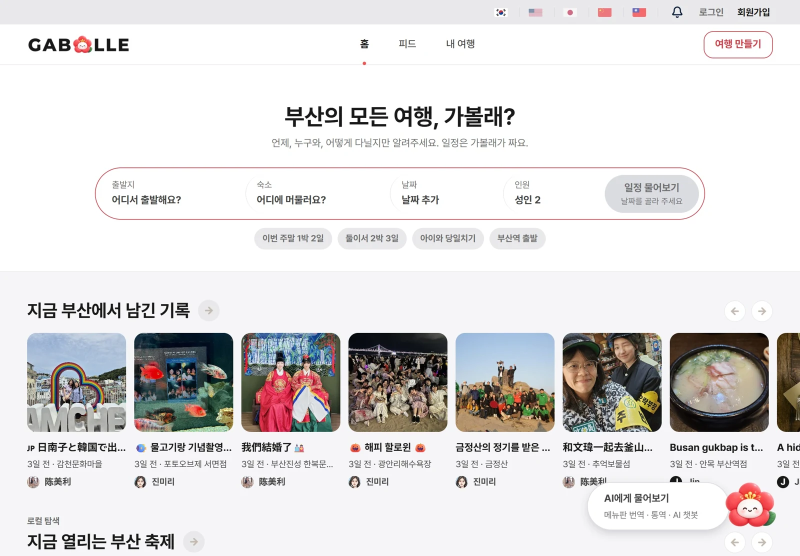

01
로그아웃을 즉시 반영하는 인증 구조
토큰의 유효기간이 남아 있어도 로그아웃한 사용자의 접근은 막아야 했습니다. JWT와 서버 세션을 함께 사용해 요청마다 세션을 확인하고, 로그아웃과 갱신 토큰 재사용을 반영했습니다. 웹은 HttpOnly Cookie, 모바일은 JSON으로 전달했습니다.
SPRING SECURITY · JWT · SERVER SESSION
부산 여행을 취향과 조건에 맞추는 서비스


팀 서비스의 일정과 피드 화면. 본인 담당은 인증, 여행·추천 작업, 기록·피드와 동행·공유 백엔드 API입니다.
부산 여행자의 취향, 이동, 식단과 접근성 조건으로 장소와 일정을 추천하고 여행 기록과 공유로 이어지는 서비스입니다.
REST API의 개인 초기 구현과 연결 작업을 설명합니다. 추천 알고리즘, 장소 데이터와 이후 팀원의 확장·수정 전체를 개인 기여로 합치지 않았습니다.
소스 코드와 서비스 화면| 기능 | 직접 구현한 API와 처리 |
|---|---|
| 인증·사용자 | 이메일·소셜 로그인, 토큰 갱신, 로그아웃과 사용자·세션 관리 |
| 여행·추천 작업 | 여행 생성·목록·상세·삭제, 조건 저장과 추천 접수·상태·결과 조회 |
| 장소·경로 | 장소 조회, 두 좌표 사이의 경로 조회와 외부 경로 연동 |
| 기록·피드 | 여행 기록 생성·조회·수정·삭제, 미디어 저장, 피드·팔로우 |
| 동행·공유 | 동행 초대, 여행 공유와 공유 여행 복제 |
토큰의 유효기간이 남아 있어도 로그아웃한 사용자의 접근은 막아야 했습니다. JWT와 서버 세션을 함께 사용해 요청마다 세션을 확인하고, 로그아웃과 갱신 토큰 재사용을 반영했습니다. 웹은 HttpOnly Cookie, 모바일은 JSON으로 전달했습니다.
날짜·예산·이동 조건과 취향을 저장하고, 같은 요청을 다시 보내도 중복 여행이 생기지 않도록 했습니다. 긴 추천 계산은 접수 응답(202)과 작업 번호(jobId)를 먼저 반환하고, SSE와 조회 API로 진행 상태와 완료 결과를 전달했습니다.
여행 기록과 미디어, 피드·팔로우를 구현했습니다. 글과 사용자·여행 관계는 DB에 저장하고, 파일 저장은 공통 인터페이스(StoragePort) 뒤의 Local/S3 구현으로 나눴습니다. 동행 초대, 여행 공유와 복제 API도 연결했습니다.
Spring API는 여행과 작업 상태를 DB에 저장·조회합니다. 긴 추천 계산은 같은 백엔드 내부의 별도 실행기로 넘기고, 화면은 진행 상태와 결과를 확인합니다.
화면이 날짜·예산·이동 조건과 취향을 보내면 여행과 제약을 저장합니다. 긴 추천 계산은 접수 응답(202)과 작업 번호(jobId)를 먼저 반환합니다. 같은 요청을 다시 보내도 중복 여행이 생기지 않도록 처리했습니다.
일반 API도 PostgreSQL을 직접 저장·조회합니다. 별도 실행기는 독립된 서버가 아닌 Spring 내부의 비동기 작업입니다.
서버 API를 직접 호출하면 응답이 나왔지만, 배포 웹에서는 공급자 로그인으로 이동하지 않거나 콜백 뒤 화면을 찾지 못했습니다. 요청 흐름을 서버 설정, API 규칙, 빌드와 화면의 네 구간으로 나눠 추적했습니다.
실행 컨테이너의 환경변수뿐 아니라 실제 배포 JavaScript 번들을 확인했습니다. 번들의 client ID가 비어 있고 API 주소가 localhost인 점을 확인했으며, 누락된 콜백 라우팅을 보완했습니다.
Jenkinsfile·Dockerfile의 설정 전달 경로, 앱과 서버의 redirect URI, 실제 번들과 콜백 화면을 대조했습니다. 네이버 동의 화면부터 공급자 토큰 교환까지 확인했고, 이후 계정 연결 정책은 별도 검토로 남겼습니다.
소셜 공급자·브라우저·기기 조합 전체가 검증됐다는 뜻은 아닙니다.
새 후보 200개를 저장하기 전에 존재 여부를 200번 조회하고 저장도 한 건씩 처리하고 있었습니다. 미리 부여한 ID가 수정·저장을 판단하는 경로(merge)에 들어가고 있어, 신규 데이터는 바로 저장(persist)하는 방식과 50개씩 묶는 방식을 비교했습니다.
p95는 측정한 저장 요청 95%의 처리시간이 이 값 이하라는 뜻입니다. 별도 부하 시험에서 첫 추천 결과를 받는 시간은 같았으며, 개선율을 전체 추천 속도로 표현하지 않았습니다.
| 방식 | 저장 p95 | 실행된 저장 방식 |
|---|---|---|
| 기존 | 171.59ms | SELECT 200 + 개별 삽입 |
| 신규 바로 저장 | 123.91ms | 존재 조회 0 + 개별 삽입 |
| 50개 묶음 | 52.52ms | 존재 조회 0 + 50개 배치 |
모드별 준비 3건을 제외하고 20건을 측정했습니다. 실제 저장은 모두 200행이며, 기존 트랜잭션과 후보·점수·코스 내용 보존 및 오류 롤백을 확인했습니다.
SQL 계측을 켠 저장 구간의 비교입니다. AI 보조의 개인 로컬 후속 실험이며 dev와 운영에는 반영하지 않았습니다.
이메일 인증과 세션, 여행 생성과 추천 접수·상태·결과 조회, 기록·피드·공유 API를 연결했습니다. API의 접수 응답과 실제 계산 완료를 구분하고, 화면과 서버가 같은 진행 상태를 보도록 맞췄습니다.
서버가 재시작되면 진행 중인 추천 작업이 남을 수 있어 자동 복구가 필요합니다. 재처리 또는 실패 전환 기준과 소셜 로그인 전체 경로는 실제 배포 환경에서 보완·확인할 과제입니다.
